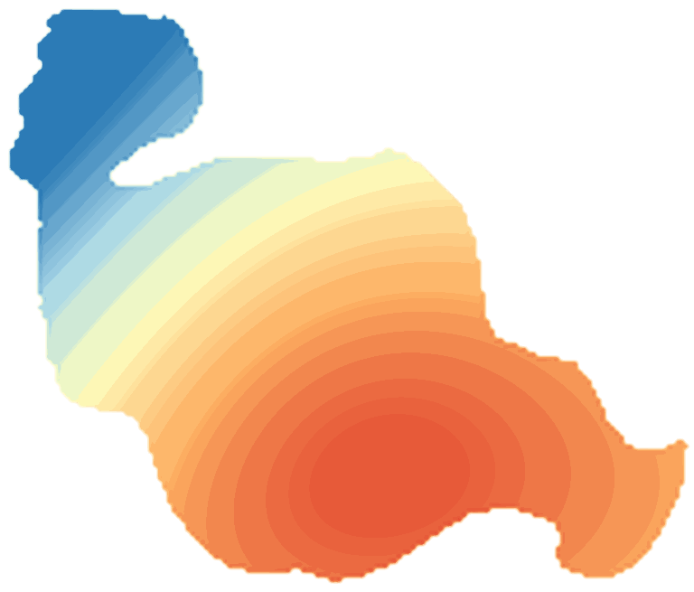

LakeScope › MI
Houghton Lake today
Updated 2026-11-26 - Atlas Labs
44°F water, level steady, near normal, windy Thursday (15 mph NE).
Water level
1137.37 ft
USGS gauge 442400084472801 - 2026-11-26
7-day trend: steady (-0.05 ft). Compared with normal for this date: -0.4 ft (same weeks, 2016-2024).
Water clarity and algae
No fresh view yet Clouds have hidden the lake lately.
Surface temperature
44°F
seen from space on 2026-11-22

Ice
Open - 0% ice cover
Estimate from weather and satellite, not a measurement. Check the ice yourself before going on it.
Weather, next 3 days
| Day | Sky | High / low | Wind | Rain |
|---|---|---|---|---|
| Thursday | Mostly Cloudy | 45 / 35°F | 15 mph NE | 0% |
| Friday | Slight Chance Sleet | 44 / 33°F | 20 mph N | 48% |
| Saturday | Partly Sunny | 46 / 36°F | 10 mph SW | 9% |
Sunrise 07:49 - sunset 17:02 - Full moon. National Weather Service.
Get the LakeScope app: alerts and the 3-D view of Houghton Lake